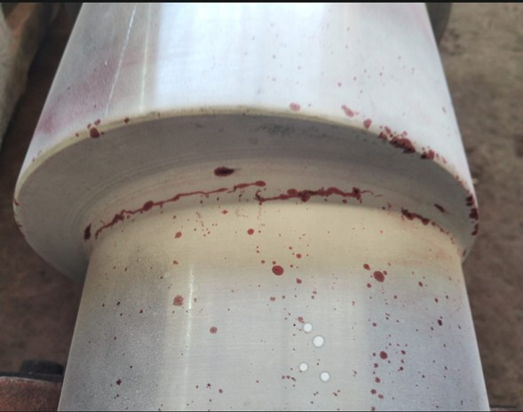
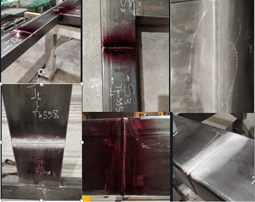

Ofrecemos servicio profesional de ensayo no destructivo (END) por líquidos penetrantes (PT) para inspección de soldaduras, estructuras metálicas y piezas en acero. Detectamos grietas, porosidad superficial, falta de fusión, socavado y otras discontinuidades abiertas a la superficie. Atendemos en Bogotá y cobertura nacional.
Cotizar por WhatsAppEl servicio se ejecuta bajo lineamientos técnicos como ASTM E165, ASME Sección V e ISO 3452, según requerimientos del proyecto.

